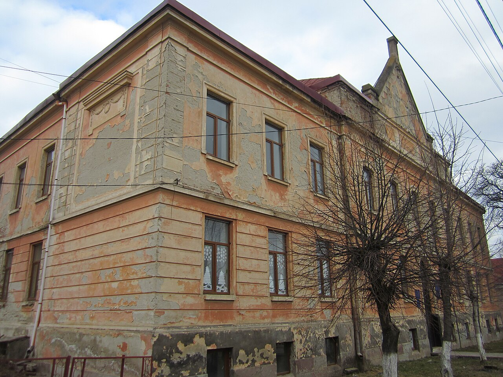

Від повоєнного технікуму — до сучасного коледжу ПДУ
Кіцманський сільськогосподарський технікум було засновано 14 листопада 1944 року згідно з наказом Наркомзему УРСР для підготовки агрономів, зоотехніків і ветеринарних фельдшерів. Перший набір складав лише по 30 осіб на кожне відділення, а заняття розпочиналися в пристосованих приміщеннях колишньої австрійської школи.
У 1952 році заклад реорганізовано в Кіцманський зооветеринарний технікум, який швидко став головним центром ветеринарної освіти Буковини. У 1973 році на базі технікуму та місцевого господарства створено радгосп-технікум, що дозволило студентам поєднувати академічні лекції з практичною роботою на землі.
З 2006 року заклад діє як відокремлений структурний підрозділ Подільського державного університету. Тут діють сучасні ветеринарні лабораторії, агрохімічні дослідні ділянки, комп’ютерні класи та бібліотека з рідкісними фаховими виданнями.